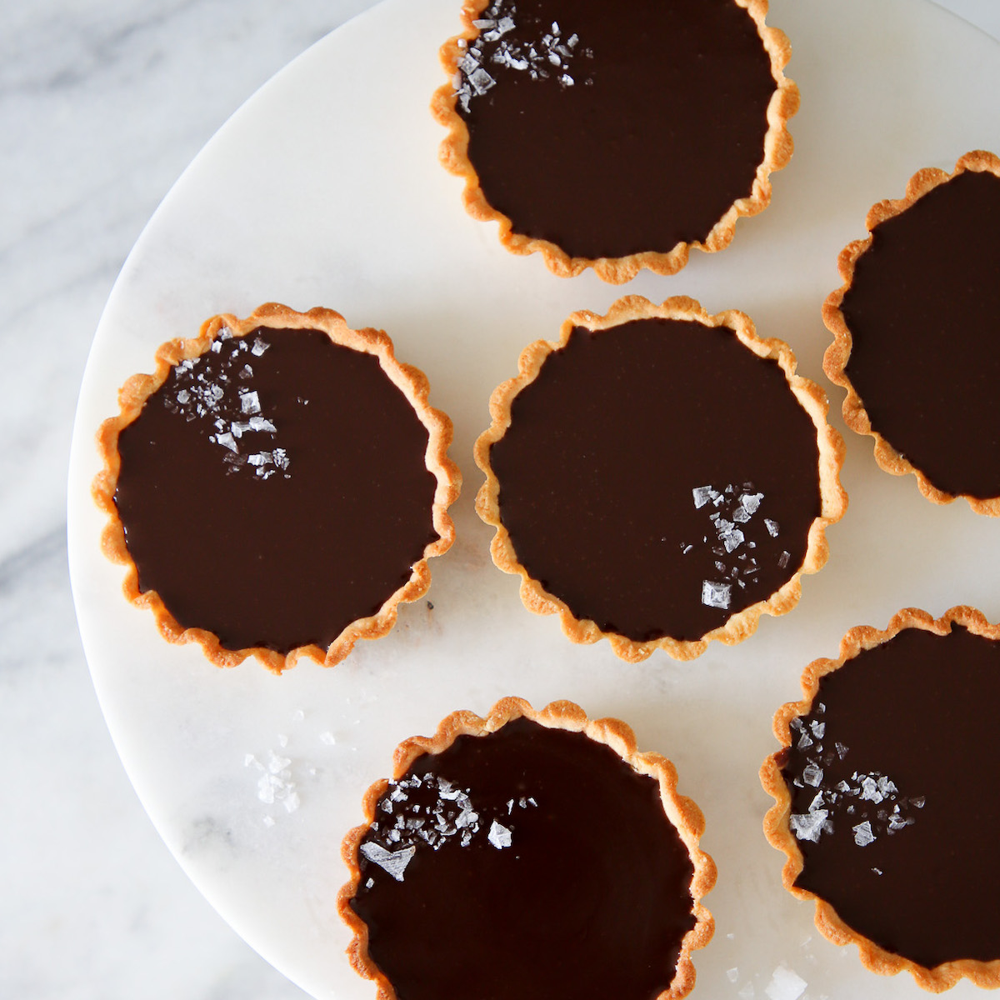

Chocolate Tarts

Description
These mini salted chocolate tarts are super easy and use only a few basic ingredients in your pantry.
Must try for any sweet tooth!
Ingredients
The Shells
- 75g unsalted butter
- 2 tbsp white sugar
- 1 egg yolk
- 1 teaspoon vanilla extract
- 130g all purpose flour
The Chocolate Filling
- 110g semi sweet chocolate
- 125ml heavy cream
Steps
- In a bowl, add in butter and sugar. Mix with a spatula. Then add in yolk, vanilla extract and mix everything together.
- Lastly add in flour and bring everything together into a dough. Place it on a cling film, flattening it a bit, wrap it and chill in the fridge for 30 minutes or until it's manageable.
- Take a piece of dough and press it evenly into a 6.5 cm tart mould. Cut off excess dough with a knife. Using a fork, prick the base so that it doesn't puff up while baking. Repeat the same with the rest of the dough. Place them on a baking tray. Place them in the freezer for 10 minutes.
- Bake in a preheated oven at 170ºC on the lowest rack for 20 minutes. Remove from the oven and leave to cool completely. Once cooled, remove the shells from the moulds by flipping them and tapping a bit on the back of the back of the base to help releasing them. Set aside.
- Chop chocolate into small chunks and put them into a jar (easier to fill the tarts later).
- PHeat cream in a pot, on medium high heat until you see bubbles start appearing around the edges (don't let it boil). Pour immediately into the jar containing chocolate and let it sit for 3 minutes. Using a whisk, mix everything together into a smooth texture.
- Pour the chocolate filling into the shells. Place in the fridge for 30 minutes. Sprinkle some sea salt flakes and then serve!